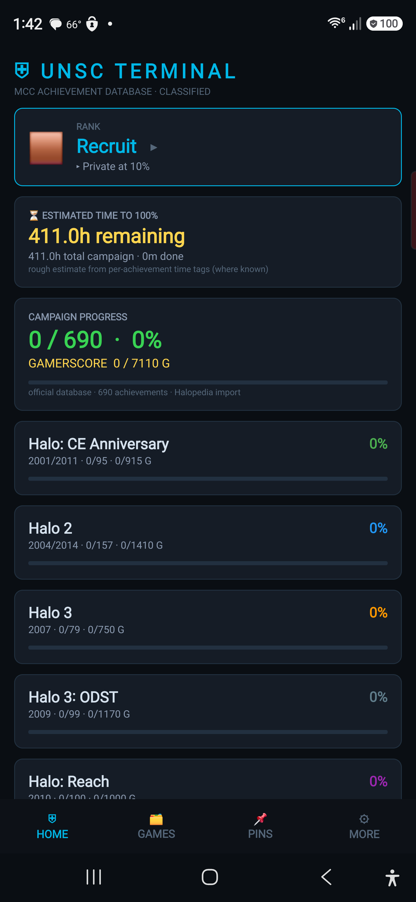
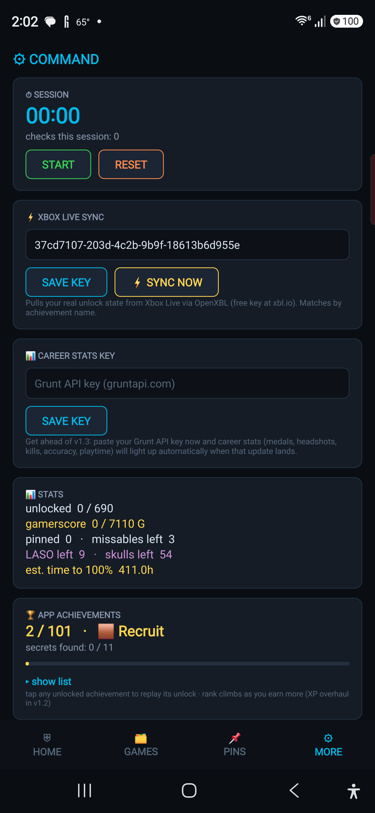
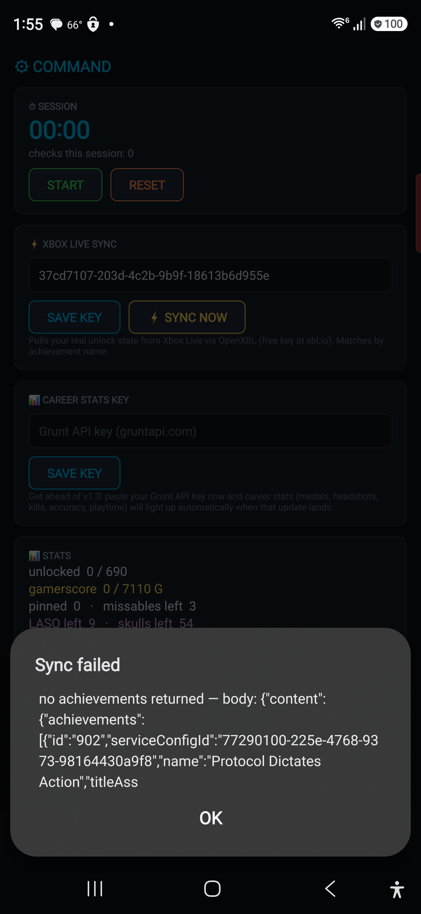

⛨ UNSC TERMINAL
HALO: MCC ACHIEVEMENT TRACKER · NATIVE ANDROID
Sideload the latest APK from Releases. Free, no ads, for personal use.
WHAT IT DOES
- 690-achievement database across CE, H2, H3, ODST, Reach, H4 + MCC — with real icons (grey when locked, color when unlocked)
- Xbox Live sync — pulls your real unlock state via a free OpenXBL key
- XP-weighted ranking + your choice of MCC / Halo 3 / Reach rank ladders
- Focus Mode — the best next achievements for the least time, difficulty-weighted
- Guides per achievement — Halopedia, TrueAchievements & YouTube, one tap away
- 100+ in-app meta-achievements + hidden easter eggs


